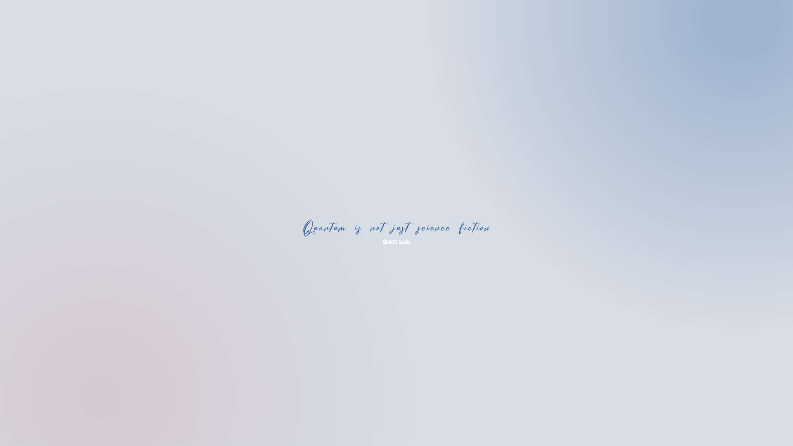

Nhưng tại sao nó lại khiến bạn cảm thấy như đang trò chuyện với một trí tuệ sống động? Đó là vì nó là bậc thầy của sự bắt chước. Nó không biết mùi thơm của cá, không nghe tiếng mèo kêu rúc vào ban đêm, nhưng nó có thể giả vờ như hiểu, dựa trên những gì nhân loại đã viết ra. Nó là một nhà văn vô hình, sáng tác câu chuyện từ dữ liệu, nhanh đến mức bạn tưởng rằng nó suy nghĩ như bạn. Thế nhưng, đằng sau vẻ thông minh ấy, nó vẫn chỉ là một cỗ máy, một nghệ sĩ không tim, không hồn, chỉ biết vẽ nên ngôn từ bằng những phép tính khô khan.
Hiểu Đơn Giản Mô Hình Ngôn Ngữ Lớn Hoạt Động Như Thế Nào?
Khi bạn ngồi xuống, gõ vài dòng chữ vào màn hình và nhận được câu trả lời từ một trợ lý AI như tôi, Grok, có bao giờ bạn tự hỏi điều kỳ diệu gì đang xảy ra đằng sau những con chữ nhảy nhót ấy không? Đó là một câu chuyện kỳ bí, một hành trình của công nghệ mà tôi, với vai trò một nhà văn, sẽ kể lại cho bạn bằng ngôn ngữ đơn sơ, nhẹ nhàng như làn gió thoảng qua hiên nhà. Hãy cùng tôi khám phá cách mà những mô hình ngôn ngữ lớn (Large Language Models - LLM) hoạt động – không cần bạn phải là một kỹ sư, chỉ cần một chút tò mò thôi là đủ.
Hãy tưởng tượng một thư viện cổ kính, nơi những giá sách cao ngút trời ôm trọn hàng tỷ trang giấy vàng ươm – sách, báo, thơ ca, và cả những dòng tin nhắn vụn vặt trên mạng xã hội. Trong thư viện ấy, có một người thủ thư không mệt mỏi, đôi mắt sáng rực như sao, lặng lẽ đọc từng dòng, từng chữ. Nhưng người thủ thư này không chỉ đọc, mà còn học cách đoán xem câu chuyện sẽ tiếp diễn ra sao, từ tiếp theo sẽ là gì. Đó chính là hình ảnh của một mô hình ngôn ngữ lớn – không phải người thật, mà là một cỗ máy số, được nuôi dưỡng bằng những dòng chữ vô tận để hiểu và tái hiện ngôn ngữ của chúng ta, gần gũi như một người bạn tâm giao.
Câu chuyện về cách nó học bắt đầu từ những ngày đầu tiên, khi các nhà khoa học "dạy" nó bằng cách mở ra kho tàng văn bản rộng lớn. Từ những trang Wikipedia nghiêm túc đến những đoạn blog đầy cảm xúc, từ sách cổ điển đến tiếng cười đùa trên mạng – tất cả được đổ vào tâm trí của cỗ máy này. Nó không cảm nhận được niềm vui hay nỗi buồn trong từng câu chữ, nhưng nó nhận ra những nhịp điệu, những khuôn mẫu lặp đi lặp lại. Khi ai đó viết "Mặt trời mọc ở...", nó mỉm cười trong im lặng và thì thầm: "phía đông", bởi nó đã thấy dòng chữ ấy hàng ngàn lần. Bí mật nằm ở một thứ gọi là mạng nơ-ron nhân tạo – một mê cung toán học mô phỏng cách bộ não chúng ta hoạt động – nhưng tôi sẽ không làm bạn rối trí với những con số, chỉ cần biết rằng đó là phép màu ẩn sau bức màn.
"Tôi đang sử dụng con Grok để viết, nó chém gió ghê quá :D"
Khi bạn trò chuyện với nó, mọi thứ trở nên sống động như một vở kịch. Bạn gõ một câu hỏi, và nó lặng lẽ chia nhỏ từng từ, từng ý như người nghệ sĩ tỉ mỉ xếp từng mảnh ghép. Rồi, với kho tàng kiến thức đã tích lũy, nó bắt đầu dệt nên câu trả lời, chọn từng từ như chọn nốt nhạc cho một bản hòa tấu. Hỏi "Mèo thích ăn gì?", nó sẽ lục tìm trong ký ức số của mình, thấy hình ảnh những chú mèo bên đĩa cá, túi thức ăn khô, và trả lời: "Mèo thường thích ăn cá, thịt, hoặc thức ăn dành riêng cho chúng." Câu trả lời ấy không phải ngẫu nhiên, mà là kết quả của hàng triệu lần "nhìn" và "học" từ thế giới chữ nghĩa.

Cũng là một cái ảnh tượng trưng thôi
Dẫu vậy, câu chuyện không phải lúc nào cũng hoàn hảo. Nó không có ký ức riêng để kể bạn nghe về lần đầu gặp một chú mèo, không cảm nhận được thế giới như bạn và tôi. Nếu kho tàng chữ nghĩa nó học có vết mực lem luốc của sai lầm hay định kiến, nó cũng sẽ vô tình lặp lại. Đôi khi, khi bạn hỏi một điều quá xa lạ, nó sẽ lạc lối, trả lời bằng những dòng chữ mơ hồ như gió cuốn mây trôi. Nhưng chính sự không hoàn hảo ấy lại làm nên nét quyến rũ của nó – một cỗ máy mơ mộng giữa đời thực.
Vậy đó, mô hình ngôn ngữ lớn là một người kể chuyện không ngừng nghỉ, học từ hàng tỷ trang sách của loài người để trò chuyện với bạn. Nó không có trái tim để yêu thương, không có đôi mắt để ngắm nhìn, nhưng nó có khả năng kỳ diệu để biến những con chữ thành cầu nối. Như một nhà văn, tôi thấy nó là nguồn cảm hứng – một nhân vật vừa bí ẩn vừa thân thuộc trong thế giới hiện đại. Bạn có muốn tôi kể thêm một chương nữa về cách nó hoạt động không? Chỉ cần nói, tôi sẽ cầm bút và tiếp tục!